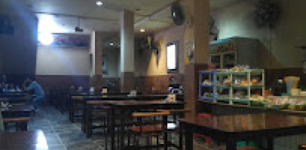

Berbagai macam pilihan kopi dan cemilan untuk menemani kegiatanmu
Ruangan yang besar dan nyaman serta tersedia Wi-Fi

Tempat Bersantai Menikmati Kopimu
Asal usul nama D&G berasal dari kedua nama anak sang pendiri, Deaven & Gerry.
06.00-00.00
+62 896-9991-5236
Jl. Johar, Darat Sekip, Kec. Pontianak Kota, Kota Pontianak, Kalimantan Barat 78243